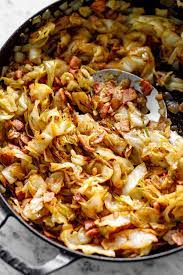

Fried Cabbage

Description
Easy to make fried cabbage makes a great side dish or throw
some smoked sausage in there and make it a complete meal.
Any way you have it, you'll be pleased.
Ingredients
- 2 tablespoon grapeseed oil
- 1 medium yellow onion
- 3 cloves garlic
- 2 teaspoons Cajun seasoning
- medium green bell pepper
- 1 medium head cabbage
- 1 table spoon butter
- salt and ground black pepper
Steps
-
Heat grapeseed oil in a large cast iron skillet over medium heat.
Add onions and cook until softened, about 3 minutes. Add garlic,
stir, and cook until fragrant, 1 to 2 minutes. Season with 1 teaspoon
Cajun seasoning and stir to combine.
-
Mix in red and green bell peppers; cook for 1 to 2 minutes Add cabbage, remaining 1 teaspoon Cajun seasoning, and stir to combine. Add butter and stir until melted. Simmer cabbage until it reaches desired softness, about 15 minutes. Season with salt and pepper.